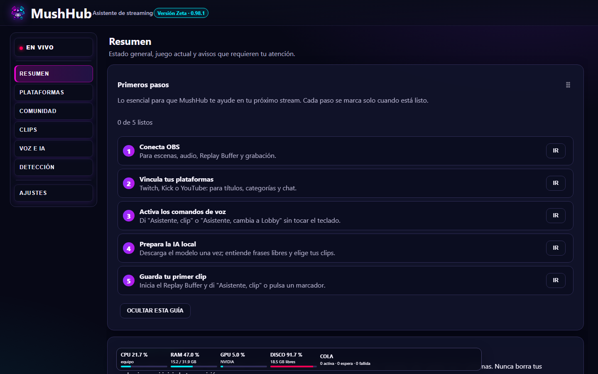
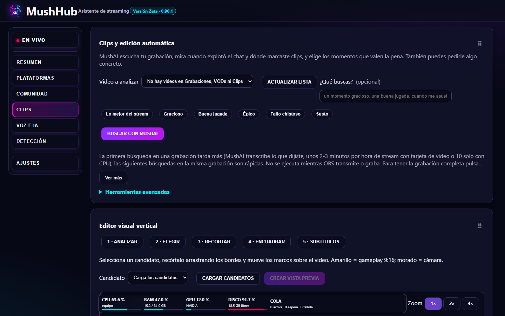
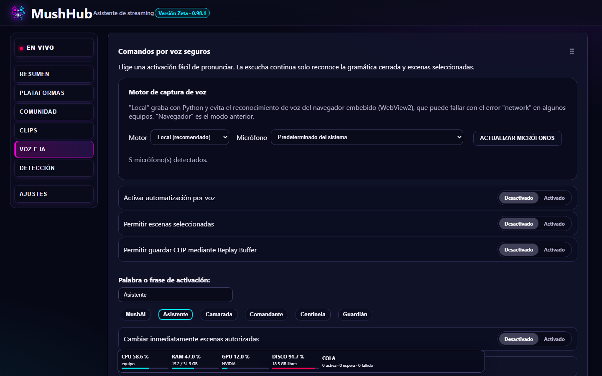

MushHub
Tu asistente de streaming, todo en uno, para Windows
MushHub controla OBS con tu voz, junta el chat de todas tus plataformas, prepara tus títulos y encuentra los mejores clips de tu stream con IA que corre en tu PC.
⬇ Descargar para Windows ☕ Apoyar en Ko-fiWindows 10/11 de 64 bits · Gratis en lo esencial · 7 días de prueba con todo desbloqueado
¿Para qué sirve MushHub?
MushHub es una aplicación gratuita para Windows que ayuda a quienes hacen streams en Twitch, Kick, YouTube y TikTok. Se descarga e instala: no hay que crear una cuenta ni iniciar sesión para usarla, y esta página es pública. Sirve para controlar OBS con la voz, juntar el chat de todas las plataformas, preparar y aplicar títulos de directo y sacar clips de los mejores momentos.
Qué hace
🎙️ Voz para OBS
Escenas, clips, Replay Buffer, grabación y micrófono diciendo "Asistente, …".
🤖 MushAI, IA local
Entiende frases libres, sugiere títulos y califica tus clips. Corre en tu PC, gratis y privada.
✂️ Clips con IA
Escucha tu grabación, mira el chat y propone los mejores momentos con título.
💬 Multichat
Twitch, Kick, YouTube y TikTok en un solo chat, con emotes, lectura en voz alta y overlay para OBS.
📝 Títulos y categorías
Prepara y aplica títulos para Twitch, Kick y YouTube, siempre con vista previa y tu confirmación.
📱 Clips verticales
Recorta gameplay y cámara para TikTok y Shorts, con subtítulos automáticos.
👑 Founders de MushHub
El pase Founder es para quienes apuestan por MushHub desde el principio: un solo pago en Ko-fi y tienes Creator de por vida, sin mensualidades.
- Todo lo de Creator desbloqueado para siempre: MushAI sin límites, clips con IA, clips verticales y subtítulos.
- Insignia de Founder dentro de la app.
- Se activa solo con el correo de tu compra: en MushHub ve a Ajustes → Membresía.
- Ayudas directamente a que MushHub siga mejorando.
Gracias a quienes ya son Founders. Inversionista fundador: Squiper90.
Así se ve



Cómo usa MushHub tu cuenta de Google (YouTube)
Solo si tú conectas tu canal de YouTube en MushHub (es opcional), la app usa la autorización oficial de Google para: ver si estás en directo y cuántas personas te ven, mostrar y leer en voz alta los mensajes del chat en vivo, y cambiar el título de tu transmisión únicamente cuando tú lo confirmas. MushHub no sube, borra ni publica videos, no lee tu correo y no comparte ni vende tus datos. Los datos se procesan en tu PC. El uso de la información recibida de las APIs de Google cumple la Política de Datos de Usuario de los Servicios de API de Google, incluidos los requisitos de Uso Limitado. Puedes quitar el acceso cuando quieras en myaccount.google.com/permissions.
Aviso de privacidad completo →
Tus datos se quedan en tu PC
Grabaciones, clips, chat, ajustes y accesos a tus cuentas se guardan en tu computadora (los accesos, cifrados por Windows). MushHub no vende ni comparte tus datos. Las cuentas se conectan con la autorización oficial de cada plataforma: MushHub nunca ve tus contraseñas.
Lee el aviso de privacidad completo →
Requisitos
Windows 10 u 11 de 64 bits · OBS Studio 28 o más reciente con el servidor WebSocket activado · Para la IA local se recomienda una tarjeta de video con 8 GB o más.